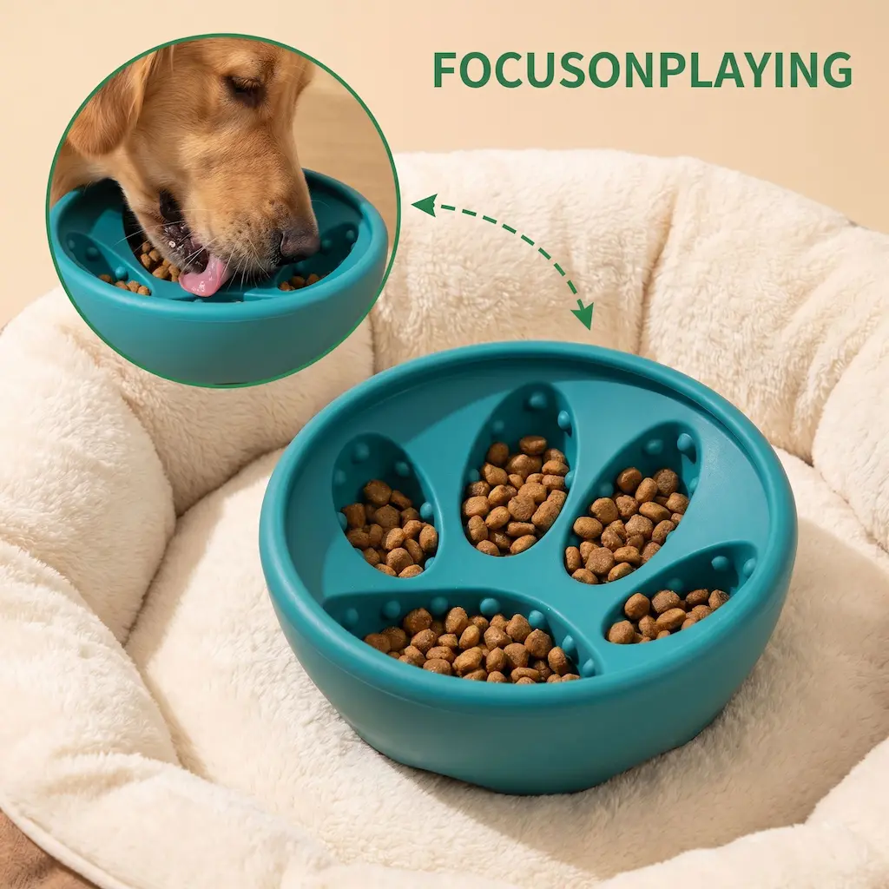
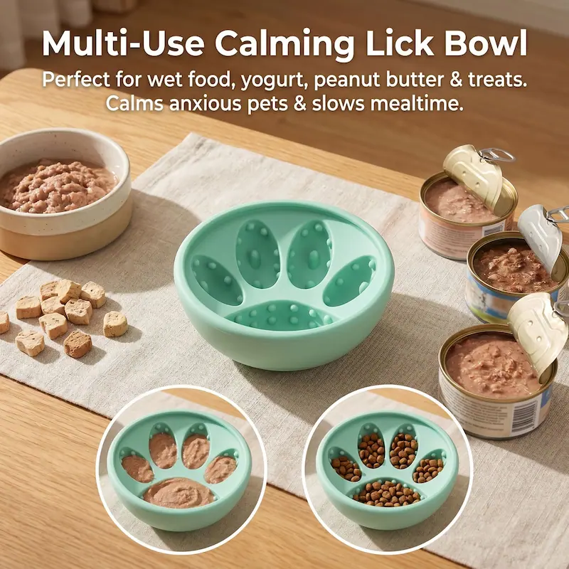
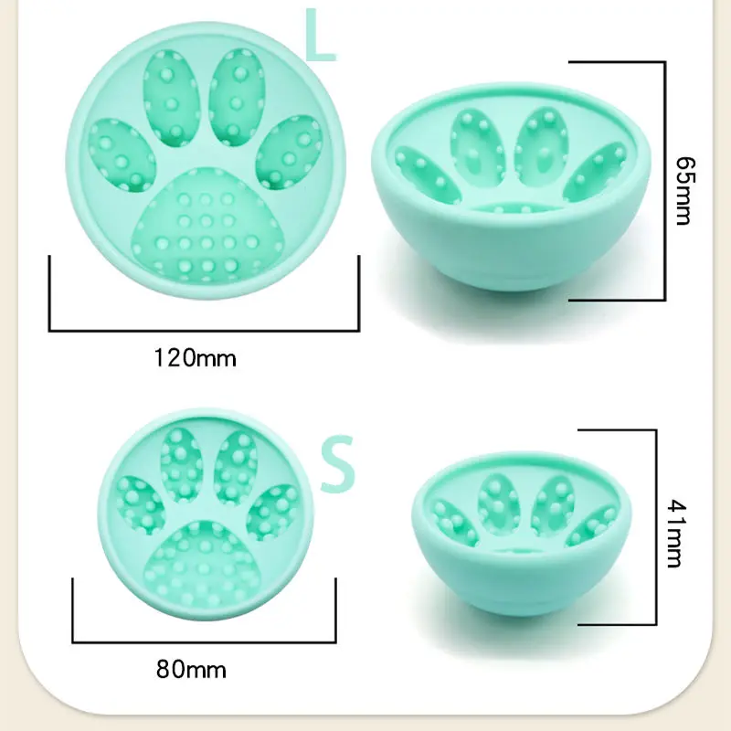
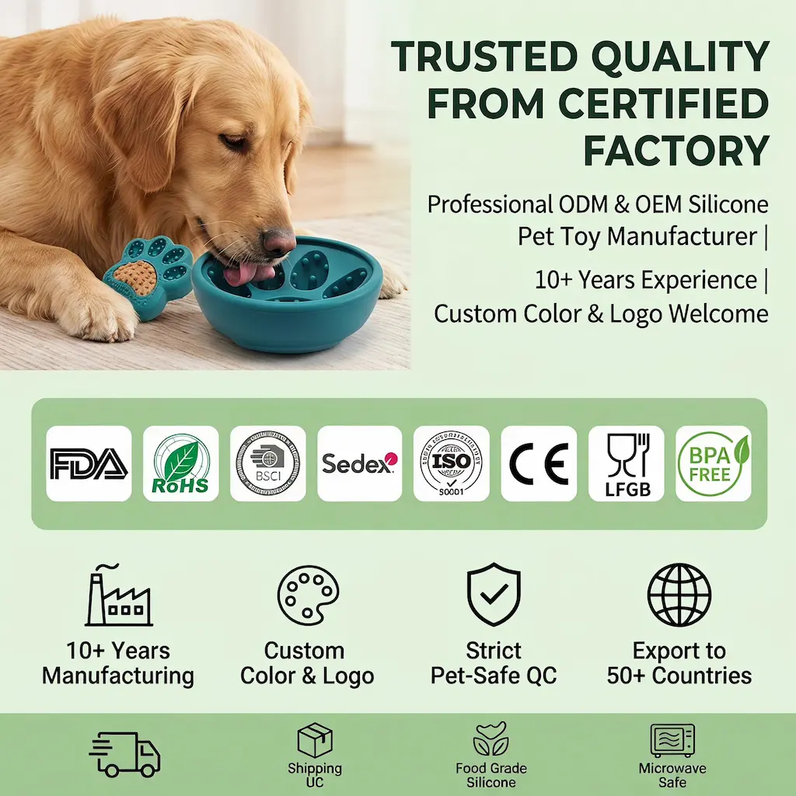
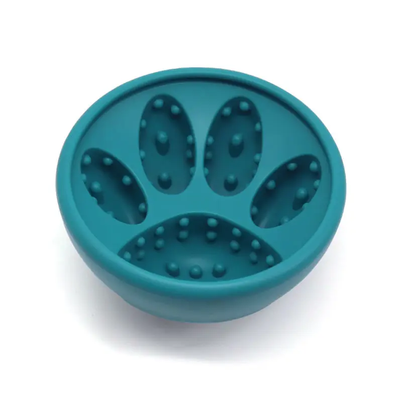

2-in-1 Slow Feeder & Lick Bowl Tray
342×177×68mm · 4 colors
View Product





Available in 8 colors: Black, Sky Blue, Gray, Mint Green, Silver, Light Yellow, Red, Rose Red. Custom colors available for OEM orders.
| Material | Food-contact safe silicone |
|---|---|
| Size L | Ø120mm × H65mm, Weight: 243g |
| Size S | Ø80mm × H41mm, Weight: 77.5g |
| Colors | Black, Sky Blue, Gray, Mint Green, Silver, Light Yellow, Red, Rose Red |
| MOQ | |
| Sample Lead Time | Approx. 7 days |
| Production Lead Time | 15–25 days after sample approval |
| Customization | Logo, color, packaging available |
| SKU | LM-017 |
The LM-017 is a bowl-shaped slow feeder featuring a paw-pattern texture with raised ridges across the feeding surface. The raised pattern forces pets to eat around the ridges, which extends mealtime and reduces gulping. This design is particularly effective for dry kibble and helps prevent bloating and choking in fast eaters.
Available in two sizes to suit different pet breeds and portion sizes. Size L (120mm diameter, 243g) is suitable for medium to large dogs and holds larger meal portions. Size S (80mm diameter, 77.5g) works well for small dogs, puppies and cats. The bowl shape provides a defined feeding area that many pets find more comfortable than flat mats.
Made from 100% food-contact safe silicone. BPA-free, non-toxic, and safe for daily use. The silicone material is soft enough to protect pet gums and teeth during feeding, while remaining durable through repeated use and washing. Certification documents available upon request prior to order placement.
Dishwasher safe — top rack recommended. The smooth silicone surface can also be rinsed under running water. The bowl shape makes cleaning straightforward without hard-to-reach corners.
Available for wholesale and private label. Customization options:
Size L is suitable for medium to large dogs (10kg+). Size S works well for small dogs, puppies under 10kg, and cats. Consider your pet's typical meal portion when choosing — the bowl should hold the full portion without overflowing.
The silicone material provides natural grip on smooth surfaces. For tiled or very smooth floors, you may want to place the bowl on a non-slip mat or feeding area to prevent sliding during use.
Yes. Sample lead time is approximately 7 days. Contact us via the inquiry form or WhatsApp to arrange samples in your choice of size and color.
Yes. We handle FNSKU labeling and FBA-compliant packaging and ship directly to Amazon fulfillment centers in the US, UK and EU.